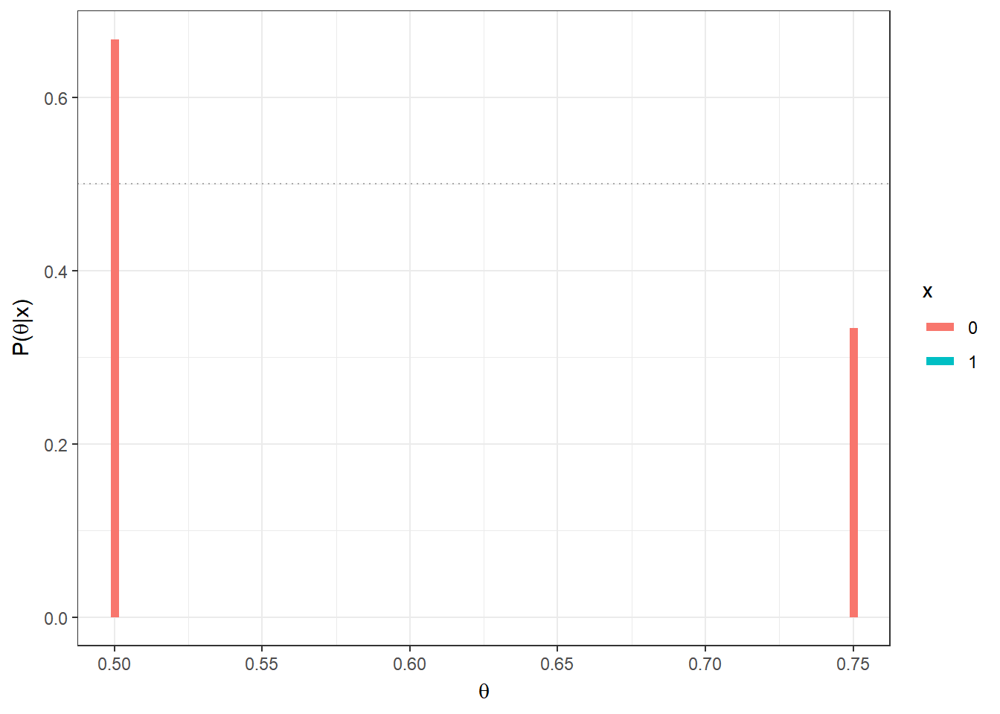

2 Introdução à Inferência Bayesiana
2.1 Notação
Inferência Estatística: fazer afirmações sobre quantidades não observáveis em um determinado contexto.
\(\theta\) : parâmetro - quantidade desconhecida de interesse (não-observável em determinado contexto).
\(\Theta\) : espaço paramétrico - conjunto onde \(\theta\) toma valores (supostamente conhecido).
\(E=\left(\boldsymbol X, \theta, \left\{f(\boldsymbol x|\theta)\right\}\right)\): experimento - “tornar visível algo que antes era invisível” ou, mais especificamente no nosso contexto, observar uma realização \(\boldsymbol x \in \mathfrak{X}\) de um vetor aleatório \(\boldsymbol X\) com alguma distribuição \(f(\boldsymbol x|\theta)\). Essa distribuição pertence, na maioria dos casos, à uma família de distribuições fixada mas que depende do parâmetro desconhecido de interesse \(\theta\). Note que na grande maioria dos problemas do dia a dia de um estatístico ele se utiliza de resultados experimentais para fazer afirmações sobre \(\theta\) e este, por sua vez, é não-observável em geral.
\(\mathfrak{X}\) : espaço amostral - conjunto onde \(\boldsymbol X\) toma valores (supostamente conhecido).
\(\mathcal{F}\) : \(\sigma\)-álgebra de (sub)conjuntos de \(\mathfrak{X}\).
Neste espaço amostral, defini-se uma família \(\mathcal{P}=\{P(\cdot|\theta): \theta \in \Theta\}\), isto é, um conjunto de distribuições (condicionais) para \(\boldsymbol X\) indexadas por \(\theta\).
\((\mathfrak{X},\mathcal{F},\mathcal{P})\) : modelo estatístico (clássico).
\(V_X(\theta)=f(\boldsymbol x |\theta)\) : função de verossimilhança.
\(~\)
2.2 Inferência Clássica (ou Frequentista)
\(\theta\) é considerado fixo (apesar de desconhecido) e, portanto, não recebe uma distribuição de probabilidade.
Baseia-se no " princípio" da amostragem repetida (interpretação frequentista de probabilidade), isto é, supõe que é possivel realizar infinitas vezes o experimento. Assim, o \(\boldsymbol x\) é apenas um dos possiveis resultados (hipóteticos) do experimento.
Probabilidade somente é definida em (uma \(\sigma-álgebra\) de) \(\mathfrak{X}\).
2.3 Inferência Bayesiana
Baseia-se na interpretação subjetivista de probabilidade, de modo que a SUA incerteza sobre algo desconhecido deve ser quantificada (traduzida) em termos de probabilidade.
Assim, Sua incerteza sobre o parâmetro (desconhecido) é representada por uma distribuição de probabilidade, \(\theta\) é tratado como uma v.a. e SUA distribuição para \(\theta\) antes da realização do experimento , \(f(\theta),\) é chamada de distribuição a priori. Note que a atribuição de uma distribuição a prior para \(\theta\) independe da natureza do parâmetro, ele pode ser a proporção de indivíduos que avalia positivamente o governo atual (quantidade essa que muda a todo instante) ou ainda a milésima casa do \(\pi\) (algum número de 0 a 9, fixo porém desconhecido no momento dessa leitura).
A atualização de SUA incerteza sobre \(\theta,\) incorporando uma nova informação trazida pelos dados \(\boldsymbol x\) (representada por \(f(\boldsymbol x| \theta)\)) é feita pelo Teorema de Bayes:
Teorema de Bayes:
\[\underbrace{f(\theta| \boldsymbol x)}_{dist. posteriori}=\dfrac{f(\theta)f(\boldsymbol x|\theta)}{\displaystyle \int_{\Theta}f(\boldsymbol x|\theta)dP_\theta} \propto~ \underbrace{f(\theta)}_{priori}\overbrace{f(\boldsymbol x|\theta).}^{verossimilhança}\]
- Toda a inferência sobre \(\theta\) será baseada exclusivamente em \(f(\theta| \boldsymbol x)\), não sendo necessário considerar pontos amostrais que poderiam mas não foram observados (como é feito na inferência frequentista).
\(~\)
- Observação: será utilizada a notação geral para integral (de Lebesgue): \[\displaystyle \int_{\Theta}f(\boldsymbol x|\theta)dP_\theta = \left\{ \begin{array}{ll} \displaystyle \int_{\Theta}f(\boldsymbol x|\theta) f(\theta) d\theta ~&~ (caso~~contínuo)\\ \displaystyle \sum_{\Theta}f(\boldsymbol x|\theta) f(\theta) ~&~ (caso~~discreto) \end{array}\right.\]
\(~\)
Exemplo 1.a: Suponha que existem duas moedas, uma delas tem \(\theta =1/2\) (honesta) e a outra \(\theta=3/4\) (viesada). Uma moeda é escolhida e é feito um lançamento da moeda selecionada. Nesse experimento, tem-se \(X|\theta \sim Ber(\theta)\), com \(\Theta=\{1/2,3/4\}\) e \(\mathfrak{X}=\{0,1\}\). Como “chutar” o valor de \(\theta\)?
Considere que não existe razão para você acreditar que há algum tipo de preferência na escolha de uma ou outra moeda, isto é, considere que a priori \(f(\theta=1/2)\) \(=f(\theta=3/4)\) \(=1/2\). Suponha que o lançamento resultou em cara (\(x=1\)). Então
\(f(\theta = 3/4|X=1)\) \(=\dfrac{f(X=1|\theta=3/4)f(\theta=3/4)}{\sum_\theta f(X=1|\theta)f(\theta)}\) \(=\dfrac{\dfrac{3}{4}\dfrac{1}{2}}{\dfrac{3}{4}~\dfrac{1}{2}+\dfrac{1}{2}~\dfrac{1}{2}}=\) \(\dfrac{3/4}{5/4}=\dfrac{3}{5}\) \(= 1-\underbrace{f(\theta=1/2|X=1)}_{2/5}\)
Se, no entando, o resultado do lançamento da moeda fosse coroa (\(x=0\)), teríamos
\(P(\theta=3/4|X=0)\) \(=\dfrac{\dfrac{1}{4}~\dfrac{1}{2}}{\dfrac{1}{4}~\dfrac{1}{2}+\dfrac{1}{2}~\dfrac{1}{2}}\) \(=\dfrac{1/2}{1/2+2/2}=\dfrac{1}{3}\)
 Assim, se sua decisão for escolher o valor mais provável de \(\theta\) após observar \(x\), a conclusão seria que a moeda é viesada \((\theta=3/4)\) se for observado cara \((x=1)\) e que a moeda é honesta \((\theta=1/2)\) se o resultado for coroa \((x=0)\).
\(~\)
Exemplo 1.b: Considere agora que serão realizados \(n\) lançamentos da moeda, de modo que agora tem-se \(X|\theta \sim Bin(n,\theta)\), \(\theta \in \{1/2,3/4\}\), \(x \in \{0,1,\ldots,n\}\). Suponha que observa-se \(X=x\).
\(f(\theta=3/4|X=x)\) \(=\dfrac{f(x|\theta=3/4)f(\theta=3/4)}{\displaystyle \sum_{\theta\in \{1/2,3/4\}}f(x|\theta)f(\theta)}\) \(=\dfrac{\displaystyle \binom{n}{x}\left(\dfrac{3}{4}\right)^x\left(\dfrac{1}{4}\right)^{n-x}\dfrac{1}{2}}{\displaystyle \binom{n}{x}\left(\dfrac{3}{4}\right)^x\left(\dfrac{1}{4}\right)^{n-x}\dfrac{1}{2}+\displaystyle\binom{n}{x}\left(\dfrac{1}{2}\right)^x\left(\dfrac{1}{2}\right)^{n-x}\dfrac{1}{2}}\) \(=\dfrac{1}{1+\left(\dfrac{2^n}{3^x}\right)}\) \(=\dfrac{3^x}{3^x + 2^n}\).

\(~\)
Note que o Exemplo 1.a é um caso particular desse exemplo quando \(n=1\). Se novamente sua decisão é baseada no valor mais provável de \(\theta\), temos
\(f(\theta=3/4|X=x) > \dfrac{1}{2}\) \(\Longleftrightarrow \dfrac{3^x}{3^x + 2^n} > \dfrac{1}{2}\) \(\Longleftrightarrow {3^x} > {2^n}\) \(\Longleftrightarrow \dfrac{x}{n} = \bar{x} > \log_3{2}\approx 0,63\).
\(~\)
Exemplo 1.c: Considere uma moeda será lançada \(n\) vezes mas que \(\theta\) é desconhecido, de modo que \(\Theta = [0,1]\). Para simplificar, vamos assumir \(f(\theta)=\mathbb{I}_{[0,1]}(\theta)\), isto é, \(\theta \sim Unif(0,1)\sim Beta(1,1)\). Essa priori corresponde ao caso onde você acredita que todos os valores possíveis para \(\theta\) são igualmente “prováveis”, assim como nos exemplos anteriores. Novamente, \(X|\theta \sim Bin(n,\theta)\)
\(f(\theta|x)=\) \(\dfrac{f(x|\theta)f(\theta)}{\int_0^1 f(x|\theta)f(\theta)d\theta}=\) \(\dfrac{\binom{n}{x}\theta^x(1-\theta)^{n-x} ~~\mathbb{I}_{[0,1]}(\theta)}{\int_0^1\binom{n}{x}\theta^x(1-\theta)^{n-x}d\theta}=\) \(\dfrac{\dfrac{\Gamma(1+x+1+n-x)}{\Gamma(1+x)\Gamma(1+n-x)}~~\theta^x(1-\theta)^{n-x}~~\mathbb{I}_{[0,1]}(\theta)}{\underbrace{\displaystyle \int_0^1\dfrac{\Gamma(1+x+1+n-x)}{\Gamma(1+x)\Gamma(1+n-x)}~~\theta^x(1-\theta)^{n-x}d\theta}_{1}}\) \(=\dfrac{\Gamma(1+x+1+n-x)}{\Gamma(1+x)\Gamma(1+n-x)}~~\theta^x(1-\theta)^{n-x}~~\mathbb{I}_{[0,1]}(\theta)\).
\(~\)
Logo \(\theta|x \sim Beta(1+x,1+n-x)\). Nesse exemplo, o valor “mais provável” (com maior densidade a posteriori) para \(\theta\) é a moda da distribuição, \(Moda(\theta|x)\) \(= \dfrac{(1+x)-1}{(1+x)+(1+n-x)-2}\) \(= \dfrac{x}{n}\) \(=\bar{x}\).
\(~\)
Exemplo 1.d Por fim, suponha que no exemplo anterior, sua opinião a priori é representada por uma distribuição beta qualquer com parâmetros \(a\) e \(b\), \(a,b > 0\). Desta forma, \(X|\theta \sim Bin(n,\theta)\) e \(\theta\sim Beta(a,b)\). Calculando a distribuição a posteriori de forma similar ao exemplo anterior, temos que \(\theta|X=x \sim Beta(a+x,b+n-x)\).
\(~\)

\(~\)
Suponha que \(a=b=1\) (como no exemplo anterior), \(n=5\) e \(x=2\), de modo que \(\theta|x=2 \sim Beta(3,4)\). Algumas medidas resumo da distribuição posterior para esse exemplo são
\(Moda(\theta|x)\) \(=\dfrac{a+x-1}{a+b+n-2}\) \(=\dfrac{2}{5}\) \(=0,4\);
\(E[\theta|x]\) \(=\dfrac{a+x}{a+b+n}\) \(=\dfrac{3}{7}\) \(=0,43\);
\(Med(\theta|x)\) \(\approx \dfrac{a+x-1/3}{a+b+n-2/3}\) \(=\dfrac{8/3}{19/3}\) \(\approx 0,42\);
\(Var(\theta|x)\) \(=\dfrac{(a+x)(b+n-x)}{(a+b+n)^2(a+b+n+1)}\) \(=\dfrac{12}{392}\) \(\approx 0,031\).
\(~\)
2.4 Distribuição a Priori
- A priori é sempre subjetiva (assim como a escolha do modelo estatístico)!
- Por exemplo, dizer que os dados seguem uma distribuição normal, é uma escolha subjetiva, muitas vezes baeadas nas facilidades mathemáticas que essa distribuição proporciona.
- Do mesmo modo, suponha que dois indivíduos que consideram que a distribuição do parêmetro é simétrica, com mesmas suposições sobre média e variância. O primeiro pode optar por representar sua distribuição usando uma distribuição Normal, enquanto o segundo pode utilizar uma distribuição T ou Cauchy.
- Por exemplo, dizer que os dados seguem uma distribuição normal, é uma escolha subjetiva, muitas vezes baeadas nas facilidades mathemáticas que essa distribuição proporciona.
- Não existe “opinião errada”, existem opiniões diferentes, dado o nível de conhecimento e as experiências prévias do indivíduo.
- A priori deve ser sua opinião apenas sobre o parâmetro \(\theta\) e não deve depender de fatores como o desenho do experimento ou o objetivo do estudo.
2.4.1 Prioris Baseada na Opinião de um Especialista
2.4.1.1 Método do Histograma
Muitas vezes, para “extrair” o conhecimento de um especialista, podemos dividir o espaço paramétrico em regiões e pedir para o especialista “ordenar” esses conjuntos, utilizando “pesos” que refletem a crença que o parâmetro esteja em cada uma daquelas regiões.
Exemplo 1. (Bayesian Computation with R, Albert,J., pág 27)
- Seja \(\theta\) uma proporção desconhecida \((\Theta=[0,1])\);
- Considere a partição \(T = \left\{[0,0.1), [0.1,0.2), \ldots, [0.9,1] \right\}\);
- Suponha que um especialistas atribui pesos \(p=(1, 5.2, 8, 7.2, 4.6, 2.1, 0.7, 0.1, 0, 0)\) a esse intervalos;
- A piori, nesse caso, é o histograma apresentado a seguir.
- Seja \(\theta\) uma proporção desconhecida \((\Theta=[0,1])\);

- Voltando ao exemplo da moeda, suponha novamente que foram observados \(x=2\) sucessos em \(n=5\) lançamentos. A posteriori nesse caso pode ser obtida multiplicando a distribuição a priori pela verossimilhança e “padronizando” a função obtida. Assim:

\(~\)
2.4.1.2 Elicitação de Hiperparâmetros
- Nessa abordagem, a priori é obtida da seguinte maneira:
- Escolha uma família de distribuições conveniente. O conceito de “conveniência” aqui pode levar em conta, por exemplo, o suporte da distribuição, se é flexível o suficiente para acomodar diversos tipos de opinião, se permite a obtenção analítica da posteriori e assim por diante;
- Obtenha um conjunto de medidas resumo (como média, variância, quantis, etc.);
- Utilize as medidas resumo para calcular hiperparâmetros da distribuição escolhida.
- Escolha uma família de distribuições conveniente. O conceito de “conveniência” aqui pode levar em conta, por exemplo, o suporte da distribuição, se é flexível o suficiente para acomodar diversos tipos de opinião, se permite a obtenção analítica da posteriori e assim por diante;
\(~\)
Exemplo: Na seção anterior, a priori dada pelo histograma tem média \(m=0.31\) e variância aproximadamente \(v=0.02\). Podemos utilizar como priori, por exemplo, uma distribuiçaõ beta com essa média e variância, já que a beta tem um suporte conveniente e facilita as contas, como também já vimos. Assim, vamos considerar uma distribuição \(Beta(a,b)\) e escolher \(a\) e \(b\) satisfazendo:
- \(E[\theta]\) \(=\dfrac{a}{a+b}\) \(=m\) \(\Longleftrightarrow b=\left(\dfrac{1-m}{m}\right)a\)
- \(Var(\theta)\) \(=\dfrac{ab}{(a+b)^2(a+b+1)}\) \(=0.02\) \(\Longleftrightarrow a=\dfrac{m(m-m^2-v)}{v}\)
Resolvendo o sistema temos, de forma geral, que \(a=\dfrac{m(m-m^2-v)}{v}\) e \(b=\dfrac{(1-m)(m-m^2-v)}{v}\).
Assim, no nosso exemplo, teríamos uma \(Beta(3,6.7)\). Além disso, já vimos que, nesse caso, a distribuição a posteriori é \(Beta(3+x,6.7+n-x)\). Considerando novamente \(n=5\) e \(x=2\), temos:

\(~\)
2.4.2 Prioris Conjugadas
Como visto no exemplo da moeda, quando distribuição a priori era \(Beta(a,b)\), a posteriori era facilmente obtida e também estava na classe das distribuições \(Beta\). Em particular, quando observa-se \(x\) sucessos em \(n\) realizações de ensaios de Bernoulli, a distribuição a posteriori é \(Beta(a+x,b+n-x)\). Isso ocorre pois essa distribuição pertence à uma classe bastante espefícica de distribuições a priori, chamadas distribuições conjugadas.
\(~\)
Definição Seja \(\mathcal{P}=\{f(x|\theta):\;\theta \in \Theta\}\) uma família de distribuições (condicionais) para \(\boldsymbol{X}\) e considere \(\mathcal{C}=\{h(\theta|a):\;a\in A\}\) uma família de distribuições para \(\theta\). Dizemos que (a família) \(\mathcal{C}\) é conjugada para \(\mathcal{P}\) se, \(\forall \;h(\theta)\in \mathcal{C},\) \(h(\theta|\boldsymbol{x})\propto f(\boldsymbol x|\theta)h(\theta) \in \mathcal{C},\forall \boldsymbol x \in \mathfrak{X}.\)
\(~\)
Resultado 1. Seja \(X\) v.a. tal que, condicional ao conhecimento de \(\theta,\) \(X|\theta \sim Bin(n,\theta).\) Considere que, a priori, \(\theta \sim Beta(a,b).\) Então, \(\theta|X=x \sim Beta(a+x,b+n-x).\) Por tanto, a família \(\mathcal{C}=\{Beta(a_1,a_2):\;(a_1,a_2)\in \mathbb{R}^2_+\}\) é conjugada para \(\mathcal{P}=\{Bin(n,\theta):\;\theta \in [0,1]\}.\)
\(~\)
- Esse resultado também vale se
- \(X_1,...,X_n\) são v.a.s condicionalmente independentes e identicamente distribuidas (c.i.i.d.) com \(X_i|\theta \sim Ber(\theta)\)
- \(X_i|\theta\sim Geo(\theta),\) \(i=1,...,n \; c.i.i.d.\)
- \(X_i|\theta \sim BinNeg(k,\theta)\)
\(\theta\sim Beta(a,b)\Rightarrow\) \(\theta|\boldsymbol X=\boldsymbol x \sim Beta(a+s,b+f)\) onde \(s\) é o número de sucessos e \(f\) é o número de fracassos.
- \(X_1,...,X_n\) são v.a.s condicionalmente independentes e identicamente distribuidas (c.i.i.d.) com \(X_i|\theta \sim Ber(\theta)\)
\(~\)
Resultado 2. (generalização do resultado anterior para o caso onde o número de categorias é maior que 2)
Seja \(\boldsymbol X | \boldsymbol \theta \sim Multinomial(n,\boldsymbol \theta)\), isto é, sua função de probabilidade é dada por
\[f(\boldsymbol x| \boldsymbol \theta)= \binom{n}{x_1,x_2,...,x_k}~\prod_{i=1}^{k-1}\theta^i~\underbrace{\left(1-\sum_{i=1}^{k-1}\theta_i\right)^{\displaystyle n-\sum_{i=1}^{k-1}x_i}}_{\displaystyle \theta_k^{~~x_k}}\]
onde \(\theta_i\in [0,1]\) com \(\sum_{i=1}^K\theta_i=1\), \(x_i \in \{0,1,...,n\}\) com \(\sum_{i=1}^nx_i=n\) e \(\displaystyle \binom{n}{x_1,x_2,...,x_k}=\dfrac{n!}{x_1!x_2!...x_k!}\).
Considere que, a priori, \(\boldsymbol \theta \sim Dirichlet(a_1,...,a_k),\) \(a_i > 0, i=1,...,k\), isto é, a f.d.p. a priori para \(\boldsymbol \theta\) é dada por
\[f(\boldsymbol \theta) = \dfrac{\Gamma(\sum_{i=1}^K a_i)}{\Gamma(a_1)\Gamma(a_2)...\Gamma(a_k)}\prod_{i=1}^{k-1}\theta_i^{a_i-1}\bigg(\underbrace{1-\sum_{i=1}^{k-1}\theta_i}_{\theta_k}\bigg)^{a_k-1}.\]
Então, a distribuição a posteriori para \(\boldsymbol \theta\) é \(\boldsymbol \theta|\boldsymbol X = \boldsymbol x \sim Dirichlet (a_1+x_1,...,a_k+x_k)\).
\(~\)
Demo: Para verificar o resultado, basta ver que
\(f(\boldsymbol\theta|\boldsymbol x)\) \(=\dfrac{f(\boldsymbol x| \boldsymbol \theta)f(\boldsymbol \theta)}{\int_\Theta f(\boldsymbol x| \boldsymbol \theta)f(\boldsymbol \theta)d\boldsymbol \theta}\) \(\propto f(\boldsymbol x| \boldsymbol \theta)f(\boldsymbol \theta)\) \(\propto \prod_{i=1}^{k-1}\theta_i^{(a_i+x_i-1)}\left(1-\sum_{i=1}^{k-1}\theta_i\right)^{(a_k+x_k)-1}\)
\(~\)
Resultado 3. seja \(X_1,...,X_n\) v.a. c.i.i.d tais que \(X_i|\theta \sim Unif(0,\theta)\) e considere que, a priori,\(\theta \sim Pareto(a,b)\). Então \(\theta|\boldsymbol X = \boldsymbol x \sim Pareto\left(a+n,max\{b,x_{(n)}\}\right)\).
\(~\)
Demo:
\(f(\boldsymbol x|\theta)\) \(\overset{ci}{=}\prod_{i=1}^nf(x_i|\theta)\) \(\overset{id}{=}\prod_{i=1}^n\dfrac{1}{\theta}\mathbb{I}_{[0,\theta]}(x_i)\) \(=\dfrac{1}{\theta^n}\mathbb{I}_{[0,\theta]}(x_{(n)})\) \(=\dfrac{1}{\theta^n}\mathbb{I}_{[x_{(n)},+\infty)}(\theta)\)
onde \(x_{(n)}=max\{x_1,...,x_n\}\).
\(~\)
\(f(\theta)=\dfrac{ab^a}{\theta^{a+1}}\mathbb{I}_{[b,+\infty]}(\theta)\).
Então
\(f(\theta| \boldsymbol x)\) \(\propto f(\boldsymbol x|\theta)f(\theta)\) \(=\dfrac{1}{\theta^{a+n+1}}\mathbb{I}_{[x_{(n)},+\infty)}(\theta)\mathbb{I}_{[b,+\infty)}(\theta)\) \(=\dfrac{1}{\theta^{a+n+1}}\mathbb{I}_{[max\{b,x_{(n)}\},+\infty)}(\theta)\)
\(~\) \(\Rightarrow \theta|\boldsymbol X = \boldsymbol x \sim Pareto(a+n,max\{b,x_{(n)}\})\).
\(~\)
Resultado 4. Seja \(X_1,...,X_n,Y_1,...,Y_m\) v.a. condicionalmente independentes tais que \(X_i|\theta\sim Exp(\theta),i=1,...,n\) e \(Y_j|\theta \sim Poisson(\theta),j=1,...,m\). Considere que, a priori, \(\theta \sim Gama(a,b)\). Então \(\theta| \boldsymbol x,\boldsymbol y \sim Gama(a+n+\sum_jy_j~,~b+m+\sum_ix_i)\).
Demo:
\(f(\boldsymbol x, \boldsymbol y|\theta)\overset{ci}{=}f(\boldsymbol x|\theta)f(\boldsymbol y|\theta)\overset{ci}{=}\) \(\prod_{i=1}^nf(x_i|\theta)\prod_{j=1}^mf(y_i|\theta)=\) \(\prod_{i=1}^n\theta e^{-\theta x_i}\prod_{j=1}^m\dfrac{\theta^{y_j}e^{-\theta}}{y_j!}=\) \(\dfrac{1}{\prod_{j=1}^my_j!}\theta^{n+\sum_j y_j}e^{-(m+\sum_ix_i)\theta}\)
\(~\)
\(f(\theta)=\dfrac{b^a}{\Gamma(a)}\theta^{a-1}e^{-b\theta}\) \(~\)
\(f(\theta| \boldsymbol{x,y})\propto f(\boldsymbol x, \boldsymbol y|\theta)f(\theta)\propto\) \(\theta^{[a+n+\sum_jy_j]-1}e^{-[b+m+\sum_ix_i]\theta}\) \(~\)
\(\Rightarrow \theta| \boldsymbol x,\boldsymbol y \sim Gama(a+n+\sum_jy_j,b+m+\sum_ix_i)\)
\(~\)
Resultado 5. Seja \(~\mathcal{P}=\{f(\boldsymbol x|\theta):\; \theta \in \Theta\}~\) e \(~\mathcal{C}=\{h(\theta|a):\;a\in A\}~\) uma família conjugada para \(\mathcal{P}\). Considere \(\mathcal{M}=\{h(\theta)=\sum_{i=1}^mw_ih_i(\theta):\) \(h_i \in \mathcal{C} \; e \; w_i>0,\; \sum_{i=1}^m w_i=1\}\). Então \(\mathcal{M}\) é família conjugada para \(\mathcal{P}\).
Demo: Como \(\mathcal{C}\) é conjugada para \(\mathcal{P}\), para toda função \(h_i \in \mathcal{C}\), temos que \(f_i(\theta|\boldsymbol x)\propto h_i(\theta)f(\boldsymbol x|\theta)\in \mathcal{C}\). Então
\(~\)
\(h\in \mathcal{M}\) \(~\Rightarrow~ f(\theta|\boldsymbol x)\) \(~\propto~ h(\theta)f(\boldsymbol x|\theta)\) \(~\propto~\sum_{i=1}^m w_i\underbrace{h_i(\theta)f(\boldsymbol x|\theta)}_{\in \mathcal{C}}\) \(~\propto~\sum_{i=1}^m w_i^*f_i(\theta|\boldsymbol x)\in \mathcal{M}\).
\(~\)
Exemplo. Seja \(X|\theta \sim Bin(n,\theta)\) e \(f(\theta)\) \(=wf_1(\theta)+(1-w)f_2(\theta)\), onde \(f_1\sim Beta(a_1,b_1)\) e \(f_2\sim Beta(a_2,b_2)\).
\(~\)
\(f(\theta|x)\) \(=\dfrac{f(x|\theta)f(\theta)}{\int_0^1f(x|\theta)f(\theta)}\) \(=\dfrac{f(x|\theta)[wf_1(\theta)+(1-w)f_2(\theta)]}{w\int_0^1f_1(\theta)f(x|\theta)d\theta+(1-w)\int_0^1f_2(\theta)d\theta}\)
\(\propto\dfrac{w\binom{n}{x}\frac{\Gamma(a_1+b_1)}{\Gamma(a_1)\Gamma(b_1)}\theta^{a_1+x-1}(1-\theta)^{b_1+n-x-1}+(1-w)\binom{n}{x}\frac{\Gamma(a_2+b_2)}{\Gamma(a_2)\Gamma(b_2)}\theta^{a_2+x-1}(1-\theta)^{b_2+n-x-1}}{\underbrace{w\binom{n}{x}\frac{\Gamma(a_1+b_1)}{\Gamma(a_1)\Gamma(b_1)}\frac{\Gamma(a_1+x)\Gamma(b_1+n-x)}{\Gamma(a_1+b_1+n)}}_{A}+\underbrace{(1-w)\binom{n}{x}\frac{\Gamma(a_2+b_2)}{\Gamma(a_2)\Gamma(b_2)}\frac{\Gamma(a_2+x)\Gamma(b_2+n-x)}{\Gamma(a_2+b_2+n)}}_{B}}\)
\(\propto~\underbrace{\dfrac{A}{A+B}}_{w^*}Beta(a_1+x,b_1+n-x)+\underbrace{\dfrac{B}{A+B}}_{1-w^*}Beta(a_2+x,b_2+n-x)\)
\(~\)
Primeiramente, suponha que \(n=5\), e temos uma mistura das distribuições \(Beta(5,12)\) e \(Beta(10,3)\), com \(w=0.5\). O gráfico a seguir apresenta as distribuições a priori, a verossimilhança e a posteriori para cada possível valor de \(x\) em \(\left\{0,1,\ldots,5\right\}\).

\(~\)
Agora, suponha que \(n=5\) e foi observado \(x=2\). Novamente, considere a mistura das distribuições \(Beta(5,12)\) e \(Beta(10,3)\) mas agora com pesos \(w\) variando no conjunto \(\left\{0,0.1,\ldots,0.9,1\right\}\).

\(~\)